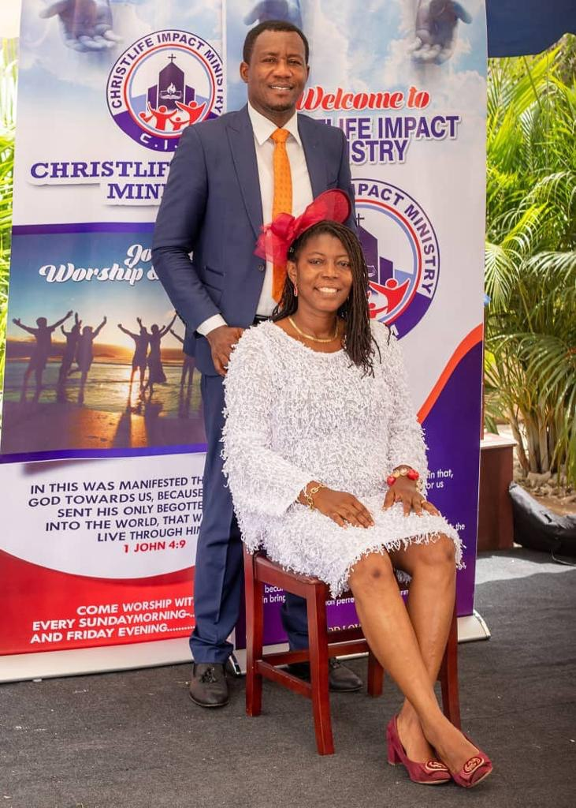

CHRISTLIFE IMPACT MINISTRY
ACTIVITIES
Children's Sunday school activities help keep the kids interested as they learn and grow spiritually. These activities are great for Sunday school, children's church, Bible camp, and VBS. More information
A Closer Look
The children will practice listening and thinking before they speak.
A Perfect Day
Through this free Sunday school activity, children will contemplate the perfect day and gain an understanding of what makes God holy.
- A Plentiful Harvest
- The children will help one another harvest the wheat.
- Vc A Thankful Celebration
- The children will participate in a group celebration.
Adventures In Trust
An activity in overcoming life's obstacles.
- All About King Josiah
The children will learn about a young king who did what was right in the eyes of the Lord.
- All We Need Is Jesus
The children will use this activity to practice rejoicing in all circumstances.
- Alpha Or Omega?
The children will learn about a special name for God.
- Always Do Good
The children will identify ways to do good for others.
- Answers Without Speaking
Through this free Sunday school activity, Children learn that God can answer our prayers without speaking.
- Apple Transformations
A believer’s life should show outward evidence of internal transformation.
- Are You Ready?
In life we prepare for many things. The most important thing we can prepare for is to meet Jesus!
- At Your Service
Children will learn that God wants us to serve Him wholeheartedly. Children will also learn about different ways in which they can serve the Lord.
- Bag Of Joy
Although life has many ups and downs, God is always willing and able to help us through the difficult times.
- Be Prepared For Opposition
Children enjoy a fun activity while learning how to prepare for opposition.
- Bean Bag Hearts
Through this activity children learn that their actions show others that they believe in Jesus.
- Being Close To God
This free Sunday school activity will teach Children that the closer they are to God, the stronger their relationship can be with Him.
- Bible Detective
A free Bible lesson activity that will help children become eager to investigate the Word of God.
- Biblical Tapestries
This free Sunday school activity will help your lesson or story come alive with a beautiful wall tapestry.
- Blended Influence
An activity to demonstrate how friends can affect the way we behave.
- Boastful Or Humble
In this free Sunday school activity, kids read several situations and decide if the child acted in a boastful or humble way.
- Born As You Are
Students will learn that God's Strength and Glory are displayed through our weaknesses.
- Bouncing Ball Challenge
The children will perform a height experiment to learn about God’s limitless power.
- Breaking Bread
Children learn to appreciate some of the customs practiced during the time of Jesus by participating in a Passover feast.
- Breath Of Life
An activity to demonstrate the depth of desire that we should have for God.
- Broken Promises
This activity shows the children a visual effect of broken promises.
- Build A Church
As children bring their offerings to class, they will earn pieces of a puzzle that when completed will be a large picture of a church building.
- Building On Faith
The children will build a “wall” of Christian maturity.
- Buried Bones
God has power over life and death.
- Bursting With Blessings
This activity uses our "Bursting For a Verse" teaching aid to assign various verses for the children to look up to learn about blessings from God.
- Can We Believe What We Cannot See?
This activity demonstrates what faith is and how to increase it.
- Can You Control It?
The children learn to ask the Lord to intervene on their behalf when they are facing turbulent times.
- Candy Prayer
The children will use candy to practice prayer.
- Care Package
Children unscramble words to complete sentences that describe ways they can care for others. These are then added to a care package.
- Care Package For The Homeless
The children will enjoy helping the less fortunate while they prepare care bags for the homeless.
- Choose To Persevere
In everyday life, children are faced with situations where they must choose to persevere.
- Choose To Serve
The children will choose actions and words that reflect a servant heart.
- Choosing Peace
The children will think critically about ways to encourage unity.
- Christian Family Values
From three short Bible stories, children discover what is special about living in a Christian family.
- Christmas Distractions
In this activity, students will create a silly story about things that can distract us from the true meaning of Christmas.
- Christmas Scavenger Hunt
In this free Sunday school activity, children will answer the clues and follow the stars to a special gift!
- Christmas Scramble
In this fun puzzle activity students will race to create as many words as possible using the letters in “Merry Christmas.”
- Citizen Of Heaven
An insightful activity that teaches children an important Spiritual Truth.
- Claim To Fame
What is impossible with man is possible with God.” Luke 18:27b
- Comic Strip Story: A Girl Brought Back To Life
The children will create a comic style summary of a Bible story where a girl is brought back to life.
- Comic Strip Story: Abigail Saves The Day
The children will create a comic style summary of a Bible story of how Abigail saves the day.
- Comic Strip Story: Elisha’s Healing Bones
The children will create a comic style summary of a Bible story.
- Comic Strip Story: Pentecost
The children will create a comic style summary of a Bible story about Pentecost.
- Comic Strip Story: The Transfiguration
The children will create a comic style summary of the Transfiguration.
- Commitment Cards
Bible reading is good for the soul.
- Common Bonds
The children will discover commonalities among one another to learn about unity.
- Community Outreach Project
A community outreach program will benefit the community, students and church as a whole.
- Compared To John
Children compare some of the facts surrounding their birth with those of John the Baptist and discover how they are both children of God.
- Courage
When we are scared, we should call out to our Heavenly Father.
- Cover To Cover
Children will enjoy an activity that demonstrates the importance of getting to know someone and the error with faultfinding.
- Crumple It!
Children identify sin and then “crumple” its influence in their lives.
- David Spares King Saul's Life
(Coloring Page) David cuts of a piece of Saul's robe, but to honor God he did not harm the king. (1Samuel 24:11)
- Defend The Innocent
The children will perform an activity to learn how to defend the innocent.
- Different Rooms
Everyone is called to serve within the Church using whatever gifts we have, "For we are God's fellow workers." 1 Corinthians 3:9a
- Distractions
The devil does his best to make us turn from Jesus. This activity shows how easily we can be distracted.
- Diversity Collage
The children will understand that God has made salvation available to all people!
- Do Friends Matter?
Bad company corrupts good character, so choose your friends wisely
- Do Not Open!
Temptations are hard to resist. Are the kids up to the test, or will they give in like Adam and Eve?
- Do The Shuffle
In this review activity, children scramble to uncover key words from the Bible story.
- Do You Believe?
This free Sunday school activity demonstrates children's ability to believe in things they have not seen, to show how they can believe in an unseen God.
- Do You Have It Under Control?
This activity helps the kids understand how much control they have over certain areas of their life.
- Do Your Part
We all have the job to share our faith with others!

- Escaping Peer Pressure
The children will learn how biblical figures handled peer pressure.
- Eternal Life Scavenger Hunt
In this free Sunday school activity, children will search for items to learn about God’s gift of salvation.
- Excuses
In this activity, children learn to distinguish between good and bad excuses.
- Eye Witness
Children become eye witnesses to review the events that take place in the Bible story.
- Fill In The Blank Prayer Request
The children will use the scriptures to build their faith in prayer.
- Finding Special Places
The children will familiarize themselves with some special places in the Bible.
- Finish The Story
In this free Sunday school activity, children will discover how God became flesh in the person of Jesus Christ, so He could show us the way to salvation.
- Fishers Of Men
(Coloring Page) Jesus called Peter and Andrew saying, "Follow me, and I will make you fishers of men."
- Fitness Fun Stations
The children will learn that becoming stronger is fun!
- Follow Jesus
At home, school, or church, we must remember to follow Jesus.
- Follow The Directions
The children will learn what they must do in order to obey God.
- Follow The Rules
Following the rules is very important. We must be careful. Sometimes we overlook the obvious.
- Following On Faith
This Bible research activity teaches us how we can faithfully follow God even through difficult times.
- For A Purpose
The children will make a visual aid to help them remember that God creates everyone and everything for a purpose, which is to bring Him glory.
- For God's Glory
This Bible research activity shows us how we can give glory to God by putting Jesus first in our lives.
- Free From Evil
In this free Sunday school activity, Children will use their Bibles to look up verses describing various kinds of sin, and will remove those sins taped all over a volunteer.
- Free To Help
The children will discover free ways to help others by reading scripture verses.
- Friend Or Foe?
Kids discover how much influence their friends have on their lives.
- Full Armor Of God
In this free Sunday school activity, children learn about God's protection by putting on the full armor of God.
- Funny Face
Giggles fill the room as children learn an important principle
- Generous Givers
The children will learn that being generous gives others an example of God’s love.
- Gifts For God
The children will create a sacrificial gift of thankfulness for God.
- Gifts Of Love
An activity about showing forgiveness to others, as a true act of
- Godly love.
- Give It Up
Children identify areas in their lives that they need to give up, so they can offer themselves to God as living sacrifices.
- Give Praise Where Praise Is Due
The children will learn the reverence in giving God praise and thanks.
- Giving And Receiving
It is important to give generously, but it is also important to receive with thanksgiving in your heart. This activity will help kids learn both.
- God Is All Knowing
A fun challenge that reveals God's omniscience.
- God's Strange Creations
The children will admire God’s power as displayed through creation.
- Godly Behaviors
Kids complete several scenarios and then determine if their chosen actions would be considered showing justice (fairness), mercy (kindness), or being humble (selflessness).
- Gold Rush
Wisdom is like a precious coin. Look for it as you would a hidden treasure.
- Good Samaritan
(Coloring Page) Jesus wants us to love our neighbors as ourselves. (Luke 10:25-37)
- Guess Whose Mom?
This scripture-matching activity will introduce the children to some very important mothers found in the Bible. A great activity for Mother's Day.
- Guide Me
One child draws an object only from verbal instructions given by another child. This activity shows how reading and studying the Bible can help us understand the Will of God.
- Head Or Heart Knowledge
This activity helps students get a better understanding of the difference between “Head Knowledge” and “Heart Knowledge.”
- Healing Cards
Children play a matching game that deals with the subject of healing and find that the Lord is our ultimate healer.
- Heart Of The Matter
This activity helps children focus on connecting with God’s heart.
- Hearts Of Truth
The children will distinguish the difference between real love and fake love.
- Help And Comfort
God's Word tells us to remember to do good, to share what we have, and to look after the needs of others.
- Helper Keys
The children will identify actions that “unlock” hearts for the Lord.
- Helper Pizza
The children will identify ways to help others with specific needs.
- Hidden Jealousy
In this free Sunday school activity, children will search for different attributes of jealousy, while learning why God's jealousy is righteous but ours is not.
- Hidden Sin
The children will learn that sin can’t be hidden from God.
- Highlight The One
Children will have fun reading God’s word and highlighting the One on paper.
- History Mystery - Old Testament
Children will place events in chronological order based on when they occurred in the Bible.
- History Mystery - Young Joseph
Children put the Biblical events about Joseph and his angry, jealous brothers in chronological order.
- Hold It Together
The children will reassemble objects to learn that Jesus holds everything together.
- Holiday Distractions
An activity that challenges students to cut out the distractions that can come with celebrating the holidays. They learn to celebrate Jesus as the priority.
- Holy Balloon
A person who is not filled with the Holy Spirit is like a deflated balloon: lifeless, limp and not much fun.
- Honest Heart Quiz
The children will evaluate the condition of their hearts.
- Hope Word Collage
In this free Sunday school activity, children will decorate words to describe why they have hope.
- How Many Names?
The children will learn how multiple names can describe the same object.
- How Patient Am I?
Kids examine different chores to learn about the benefits of patience and perseverance.
- How Tempted Are You?
Children are tempted by many things. This little quiz will give the kids an idea of how well they can resist some everyday temptations.
- How Would I React?
When something goes well, how do you feel? Who do you tell? What do you say to God? How about when something goes wrong?
- How Would You Handle It?
The children learn to use advice from Philippians to resolve disagreements and live for Christ.
- Human Robot
In this free Sunday school activity, children will learn that when they pray, God does not want them to be like human robots.
- I Can Show Thankfulness
The children will identify thankfulness in their lives.
- I Know You
A free Sunday school activity that enables children to accept themselves and others as they are.
- I Will Follow God
In this activity, children will list ways in which they will follow God and then discuss why it is important to remain spiritually active.
- I Will Praise The Lord
Kids will make a daily reminder to help them know the Lord is worthy of praise.
- If I Was In Charge!
Changing the rules may sound like fun at first, but consequences follow.
- Imagine How Humble
Children learn about humility by imagining Jesus doing something very special.
- Inside My Heart
The children will identify sinful and righteous motives of the heart.
- Interview With Noah
What was it like to be aboard the ark? Let’s ask Noah!
- It's All Garbage
The children will discover how many things in their life are not eternal, but just garbage according to Paul.
- Jerusalem Walk
The children will explore different parts of the city that Jesus often visited.
- Jesus And Me
This free Sunday school activity helps kids relate to Jesus. How does a child's life today compare to when Jesus was born?
- Jesus Is...
The children will consider the truth of their knowledge about Jesus.
- Jesus Story Cards
The children will create cards to tell the story of Jesus’ death and resurrection.
- Jesus Word Scramble
The children will find the words and discover a secret message about Jesus.
- Jewel Digging
The children will find “jewels” from God to learn about obedience.
- King David Dances Before The Lord
(Coloring Page) King David leaping and dancing before the Lord wearing an ephod to celebrate the return of the ark of the covenant. (2 Samuel 6:14-16)
- Lazy Or Wise Ways?
A challenging activity illustrating the consequences of laziness.
- Lego Patterns Of Worship
The children will learn that worshiping God comes from the heart.
- Lego Strength Challenge
The children will test the strength of their constructed buildings.
- Letter Of Encouragement
The children will write a letter to a friend or classmate encouraging them to live passionately and purposefully for Christ.
- Letters Of Encouragement
Children find joy in encouraging others.
- Listen, Think, Speak
The children will practice listening and thinking before they speak.
- Lord Of Life
The children will come up with as many words as they can by using the phrase "Lord of Life."
- Love Of Scripture
I delight in your commands because I love them.
- Love, Love, Love
An activity to show how we use the word LOVE in many different ways. Some have much more meaning than others.
- Lunch Sack Surprise
The children will participate in an activity concerning the contents of our hearts.
- Lying In A Manger
(Coloring page) A Christmas scene of Mary, Joseph and the baby Jesus lying in a manger. (Luke 2:12)
- Made By God
Experience the wonder and awe of God's creation.
- Magnet Discovery Bin
The children will discover a similarity between magnetism and believing in Jesus Christ.
- Make It Right
The children will learn that it takes action to make something right.
- Making God's Word Personal
A free Bible exercise that helps personalize God's message to us.
- Map Explorers
The children will learn that it’s a group effort to share the news of Jesus to the world.
- Match The Word To The Definition
The children will build their vocabulary by identifying the definition of words used in the fourth lesson of Nehemiah.
- Mini Roles Of Obedience
What would you say to someone who wants you to join him or her in doing the wrong thing?
- Minor Prophet Summary Cards
The children will be introduced to the 12 minor prophets and their messages.
- Missing Piece
People try to fill the empty spot in their hearts with many things.
- Mixed Up Attitudes
Is it better to give or to receive? Generosity is a great attitude to have.
- More Than Meets The Eye
Man looks at the outward appearance, while God looks at the heart.
- Moving Time
The children will discover that it is easier to move forward spiritually when they get rid of their old bad habits and live a life that is pleasing to the Lord.
- My Firsts!
The children will identify special places where something happened for the first time.
- My Fruit
This activity will show that each of us is known by the type of fruit that we produce.
- My Gifts From God
In this free Sunday school activity, the children will identify the gifts they have received from God.
- My Own Helper Word Search
The children will create their own word search about helping others.
- My Prayer Of Faith
In this free Sunday school activity, children learn about the "Prayer of Faith," and then develop their own prayer for the appropriate time.
- My Strengths
The children will evaluate their own strengths and how God could use them to help others.
- My Very Own Parable
The children will create a story to help others learn about God.
- Narrow Path
Walking the narrow road may not be easy, but the reward is worth it. It leads to eternal life with Jesus.
- Nehemiah’s Profile
The children will review Nehemiah’s different character traits and attributes.
- No Way! Food Challenge
In this free Sunday school activity, children will try unusual food combinations to learn about spiritual maturity.
- Not Really A Puzzle
Living things come in many forms. People, animals, fish, trees and flowers are all different. How this happened is no puzzle, God created everything.
- Number One Team Signature
Kids write in their names to show that they are members of a number one team—Team Jesus.
- Obey The Master
The children enjoy following detailed instructions and learn about personal obedience.
- Objects Of Refuge
The children will identify examples of a refuge to learn about God.
- Old Enough To Know
In this free Sunday school activity, children use colors and words to demonstrate the awareness of sin within their lives.
- Old Or New?
The children will understand God’s promise to make everything new.
- One Potato, You Potato
God created people who are different, but all are special in His eyes. A lesson on self-worth and love.
- Order From Chaos
The children will learn how the Law points us to a relationship with the Lord.
- Our Mighty Fortress
The children will create a classroom fortress to learn about God’s protection.
- Our Special Church
The children will take home a picture of their church.
- Palm Branch Or Nail
The children will identify positive and negative responses to peer pressure.
- Past, Present, Future
The children will learn a special name for God’s eternal nature.
- Patience, Please
In this free Sunday school activity, children practice patience techniques and are rewarded for their skills.
- Paul's Friends Help Him Escape
(Coloring Page) Paul's friends help him escape harm by lowering him from the city wall in a basket. (Acts 9:25)
- Perseverance Discovery Bin
The children will learn that God has the answers even when we do not.
- Persistence Words
The children will look up verses and complete an acrostic.
- Philippians Prayer
The children will use God’s Word to pray and encourage each other in a group.
- Planting Prayers
The children will plant sunflower seeds to learn about prayer.
- Power Of The Tongue
Through this activity, children will learn the power behind Jesus' words and their own words.
- Power Source
There are many different sources of power in the world today; what is your power source?
- Prayer Balloons
The children will compile prayer requests and create reminders to pray.
- Prayer Chain
Kids have fun exchanging Dog Tags and praying for others.
- Prayer Scrolls
The children will create scrolls with prayer requests.
- Precious In God's Sight
This activity teaches kids that we should show kindness to everyone in the world.
- Protective Helpers
The children will act out scenarios to practice being protective helpers.
- Psalm Five Pictures
The children will draw pictures to complete the verses.
- Psalm Writers
The children will create their own songs for worshiping God.
- Purpose Of Prayer
In this free Sunday school activity, children learn the importance of communicating with God on a regular basis.
- Put On The Full Armor Of God
(Free Coloring Activity) Kids color a Roman soldier wearing the different pieces of armor, then match the items to the descriptions found in Ephesians 6:10-17.
- Queen Athaliah Character Cards
Children will create cards to learn about the characters in the Queen Athaliah Bible story found in 2 Kings 11.
- Questions For God
The children will learn that God has the answers even when we do not.
- Rainbow Write Review
A colorful way of repetitively writing a Bible verse that aids visual learners and helps students successfully memorize a verse.
- Repentance Word Challenge
The children will use the letters in “repentance” to spell additional words.
- Resisting Fleshly Desires
Children explore the difference between giving into their fleshly desires and acting out of love with mercy and humility.
- Restore Me
The children will view earthly examples of restoration to learn about spiritual restoration.
- Sacrifice Acrostic
The children will unscramble words to discover the greatest sacrifice.
- Sacrificial Helpers
The children will identify ways to help others with specific needs using common everyday objects.
- Salvation Balloons
The children will identify true and false statements regarding salvation.
- Scripture Match-Up
A quick search through the Bible to match up verses about God's peace and protection with their correct scripture reference.
- Self-Reflection And Repentance
The children learn the importance of self-reflection and its purpose in repentance.
- Selling God's Word
In this free Sunday school activity, kids will discover and share the importance of God's Word by producing and recording a radio commercial announcement.
- Serve God With Your Whole Body
(Coloring Activity) Children use their coloring skills while showing how they can use the different parts of their bodies to serve God.
- Serve Like Jesus
This activity will help children remember to serve others in humility, just as Jesus did.
- Shadow Art
The children will trace their shadows to learn about God’s protection.
- Shine Among Them Like Stars
The children learn that out of hundreds of thousands of people they can shine and stand out for Jesus.
- Size Up The Ark
Children visit the great outdoors to visualize the size of Noah’s ark.
- Snowball Or Avalanche?
Kids discover that even little white lies can snowball into an avalanche.
- So Don't Worry
In this free Sunday school activity, children learn that worrying tears away at being able to enjoy the many pleasures life brings.
- Soft Or Hard Heart?
God wants us to have soft hearts, which are ready to be used for His purposes.
- Sounds Of Nature
In this free Sunday school activity, children will practice listening so they can also listen to God.
- Special Gifts Tour
A guided tour to find Spiritual Gifts and how they build up the Body of Christ, the Church.
- Special Guest
Anticipation of meeting Jesus should inspire us to live our lives for Him.
- Special Places Wall
The children will write down the names of special places onto paper bricks.
- Spiritual Gift Match
Kids match the names of Spiritual Gifts with different activities shown in pictures.
- Spiritual Gift Wrap
The children will wrap special gifts to discover the Spirit’s presence.
- Spiritual Pruning
An activity to teach children that God prunes us and cuts things out of our lives so that our lives will produce more fruit for Him.
- Spiritual Weight-Lifting
The children will learn that spiritual strength is given by the Holy Spirit.
- Stand Up For What's Right
The children will create a self-portrait while considering how to stand up for what’s right.
- Stand Up, Speak Up!
The children will practice identifying ungodly directives and acting on their faith.
- Stand Your Ground
A lesson on doing what's right, even if no one else will.
- Standout
Through these exercises, children learn the importance of living according to God's standards, even if it means that we will live like foreigners in this world.
- Star Hunt
In this fun activity, students will use star clues to find a special treasure that reminds them to seek Jesus daily.
- Sticky Note Mercy
The children will participate in an Sunday school activity to teach them about God’s mercy.
- Sticky Note Thankfulness
The children will identify times when it is easy or hard to show thankfulness.
- Sticky Scripture
A fun way to memorize Bible verses using sticky notes.
Stir The Pot, Or Cover It With Love?
Children learn that it is better to show others love, rather than stir up conflict.
- Strong Foundation
God's Word gives us a strong foundation to defeat all foes.
- Surprise Christmas Picture
Jesus was born so He could die on the cross for our sins.
- Symbols Of Strength
The children will learn that God is the ultimate source of power.
- Tally It Up
This activity helps children understand how easy it is to complain and how they can avoid it.
- Teach Me!
The children will practice teaching their peers a learned skill.
- Teamwork Juggle
The children will learn the importance of being a reliable team member.
- Tell Me No More Lies
In this activity, children will feel the freedom to give their sin to Jesus and turn from their old ways.
- Temptation Resistance
How easy is it to do something you know is wrong, especially when the temptation is so great? Four short stories to test the kids' temptation resistance.
- Ten Commandment Quiz
In this free Sunday school activity, children will find out how well they know the Ten Commandments.
- Thank You Letters For God
The children will write letters to God as an act of worship.
- Thank You Notes
It is always important to thank those who have helped us.
- Thankful Treasures
The children will find treat bags and practice showing thankfulness.
- Thankfulness Challenge
The children will list words by using the letters in “thankfulness.”
- The Cost Of Serving
Children identify with John the Baptist, the disciples, and many others who gave up everything to serve Christ.
- The Fear Of God
In this free Sunday school activity, children learn that God doesn't want us to be terrified of Him, but to respect and honor Him.
- The Great Catch
(Coloring Page) Fishing on their own strength, the fishermen came up empty handed; nevertheless, the harvest Jesus provided was so great that it began to sink the boats. (Luke 5:1-11)
- The Humble And The Proud
Using the parable about the Tax Collector and the Pharisee, this Sunday school activity will help show the difference between humility and pride.
- The Importance Of Oil
Students are challenged to list ways oil is used today, which will help them gain a better understanding of its importance during biblical times.
- The Lord Is My Shepherd (Psalm 23)
Kids will enjoy memorizing this beautiful and meaningful Psalm with these handy picture cards.
- The Mind Of Christ
The children will choose words that reflect having the mind of Christ.
- The Promised Land Tribes
The children will identify the names of the 12 tribes of Israel.
- The Same Yesterday, Today, And Forever
Many things in our life change significantly over time, but Jesus never changes. He is the same yesterday, today and tomorrow.
- Things Above And Things Below
The children will identify qualities of the “new self” verses those of the “old self.”
- Thinking BIG With God
The children will learn how God uses each person in unique ways for His purpose.
- Tic Tac Toe Unlimited
The children will have fun playing a game of tic tac toe where they get multiple chances to try to win.
- Time For God
This free Sunday school activity will help kids see where they are spending their time and show how much time they spend with God.
- To Do List
The children will enjoy making a to do list to see how they can plan their day, but discover that the Lord guides their steps.
- To Live Is...
Children will think on what it means to live.
Transfiguration Word Finder
Jesus fulfilled the promise of a Savior through the prophets.
- True Friends
Sometimes it can be hard to know who our true friends are. Thankfully, the Bible gives us some guidelines.
- Trust Check List
The children will think critically about why we can trust God.
- Turn To Refuge
The children will identify examples of a refuge to learn about God.
- Types Of Leaders
The children will identify types of leaders and the traits associated with each role.
- Types Of Warnings
The children will identify different types of warnings.
- Unseen Power
God's unseen power: what would we do without it?
- Verse Connection
Many verses in the Bible can help people with a particular problem or fear in their lives. Kids will decide which verse is best suited for six different situations.
- Verses To Live By
In this free Sunday school activity, Children learn that God's Word empowers us to live for Jesus each and every day.
- Warning Signs
This free Sunday school activity will compare warning signs the children see everyday with warnings found in the Bible. Warning signs we see help us be safe, but warning signs from God help us in many more ways.
- What Brings God's Wrath?
Search through the Bible to discover why God pours out his wrath on some.
- What Can I Hear?
An activity to show that we hear many things with our ears, but we can also hear the voice of God when we listen with our hearts.
- What Do I Need?
The children will learn that it takes preparation and perseverance to live for the Lord.
- What Do You Trust?
We place our trust in many different things, but do we place our trust where it matters most?
- What Does It Take To Be Blessed? Part 1
Choose the right word from the clue to fill in the first four verses from the Beatitudes found in Matthew 5:3-6.
- What Does It Take To Be Blessed? Part 2
Choose the right word from the clue to fill in the second part of the Beatitudes found in Matthew 5:7-10
- What Encourages You?
Children reflect on things they look forward to while learning that their greatest encouragement comes from Jesus.
- What Is Goodness?
This free Sunday school activity teaches children that God empowers us to live for Jesus each and every day.
- What Is Jealousy?
This free Sunday school activity teaches children that our jealousy is wrong, but God’s jealousy is holy and just.
- What My Father Does
Jesus only did what he saw his Father doing. We should only do what Jesus would do. John 5:19
- What Purpose Do Gates Serve?
The children will identify multiple purposes of a gate and then discuss why good gates were important to Jerusalem.
- What Should Randy Do?
Randy's week is full of choices. He wants to be honest and live a Godly life. The kids describe in their own words what Randy should do to be an honest person.
- What Would I Do To Go To Heaven?
In this free Sunday school activity, children rank good deeds for getting to Heaven, only to learn that Heaven is a gift, and cannot be earned.
- What's In The Jar?
The children will guess the contents of each jar to learn about being “filled” by Jesus!
- What's In Your Wallet?
The children will create an ID card to help them remember that their citizenship is in Heaven.
- What's Your Motivation?
Kids read several situations and decide how the character's motivation will affect the outcome of the story .
- What’s On The Inside?
Through this free Sunday school activity, children will learn that the contents of their hearts matter to God.
- When We Give Together
What may be impossible for one person to do is possible when believers give together. This activity shows the importance of teamwork.
- Who Am I?
Only God our Creator knows every special thing about us, great or small.
- Who Gets The Glory?
Who gets the glory when things go well, you or God?
- Who Hid The Spies?
Children search for letters to decipher the answer to the question, "Who hid the spies?"
- Who Is The Greatest?
In this activity, children will think about who God considers the greatest.
- Who Is Without Sin?
After taking balled-up pieces of paper and pretending to stone a sinner, the children will compare judging others to having sin in their own lives.
- Who Was It?
The children will review the Biblical accounts of Abraham, Jacob, and Moses.
- Who Would Be A Good Leader?
The children will think critically about what is required to be a good leader.
- Who's In Or Out?
This activity will create a visual picture of what is in our heart. It will allow God to reveal to us His love for all people.
- Why Do We Praise God?
Through this free Sunday school activity, children learn that God is awesome and worthy of our praise for many reasons.
- Wise Sayings
In this free Sunday school Bible activity, kids try to identify wise sayings from the Bible and from secular sources.
- Words To Live By
The children will enjoy matching the scriptures as they look them up in God’s Word.
- Work It Out
The children will choose classroom jobs for specific “wages” to learn about grace.
- Worldliness Or Godliness
Children will use current events to see the presence of worldliness and godliness in our daily lives.
- Worship Leader Interview
The children will learn how a music leader prepares for a worship service.
- You Helped Me
The world can be a lonely place; wouldn't it be nice if each of us cared for one another?
- Zechariah’s Visions
The children will match scripture to Zechariah’s visions.
- Zedekiah Alphabet
The children will use letters to spell words and remember facts about King Zedekiah.